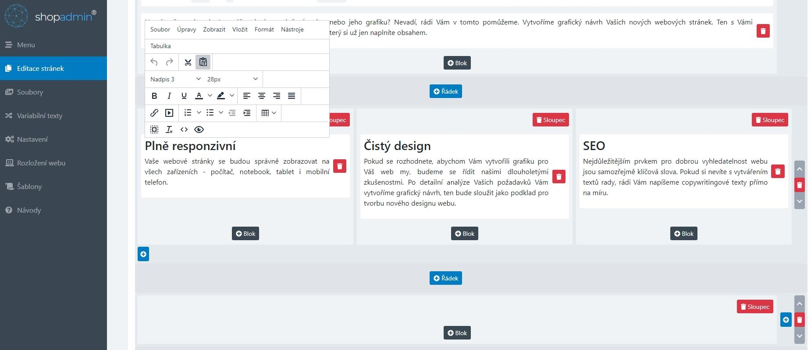

Druhy webových aplikací
Vrstvy webových aplikacích
V dnešních dobách se webové aplikace rozdělují na více vrstev, z nichž má každá svou roli. Tradičně se uvádějí tyto tři vrstvy:

Klientská vrstva
Funkci klientské vrstvy plní zpravidla webový prohlížeč, který zobrazuje uživateli obsah a také ho nechává přes klientské rozhraní posílat data na server. Můžeme zde najít technologie jako je HTML, CSS, JavaScript a také jejich knihovny (JQuery) a frameworky (Bootstrap, React).
Logická vrstva
Logickou vrstvu představují technologie na dynamické generování webových stránek (PHP, ASP.NET, JSP apod.), jež se nejčastěji zpracovávají na straně webového serveru. Provádějí se zde také úlohy, které nemohou být provedeny na klientské části (validace dat, autentizace uživatelů).
Datová vrstva
Na datové vrstvě se nachází zdroj dat, se kterým pracuje logická vrstva (databáze, datové soubory, internetové služby).
Architektura MVC
Architektura moderních webových aplikací, jejíž myšlenkou je oddělení aplikační logiky od výstupu. Díky tomuto rozdělení je celá aplikace přehlednější a nedochází k tzv. špagetovému kódu. Architektura MVC se dělí na tyto části:
- Model - obsahuje logiku aplikace, k níž můžeme zařadit výpočty, databázové dotazy, validace a podobně. Jeho úkolem je podle zadaných parametrů zpracovat určitá vstupní data a připravit z nich data výstupní. O tom, jak bude se výstupními daty nakonec naloženo, nerozhoduje.
- View (pohled) - reaguje na to, jak se podařilo modelu zpracovat data. Má na starost zobrazení výstupu dat, která mu byla modelem předána a nebo alternativně zobrazení chybové hlášky.
- Controller - zajišťuje komunikaci mezi klientem, modelem a pohledem.
{kind=link}
Webová API
API (Application Programming Interface) označuje v informatice rozhraní pro programování aplikací. Jde o komplex procedur, funkcí, tříd či protokolů nějaké knihovny (ale i programu nebo jádra operačního systému), které může programátor využívat. API určuje, jakým způsobem jsou funkce knihovny volány ze zdrojového kódu programu. V praxi se můžeme setkat s celou řadou API - s API operačních systémů, grafickými API (OpenGL, DirectX, Vulkan) nebo s API databázových a informačních systémů.
API se nyní hojně využívá při vývoji mobilních i webových aplikací a tvorbě internetových stránek. Smyslem webových API je zajištění komunikace mezi dvěma platformami, které si vzájemně vyměňují data. Umožňují využívat již naprogramovaná řešení a integrovat je do vlastních webů.
V praxi se s integrací aplikačního rozhraní setkáváme třeba na stránkách zobrazujících polohu obchodu na Google mapách. V takovém případě je využito API z Google Map, které volají vrstvu kódu, jež zobrazuje požadovaná data. API jsou využívána také čtečkami zpráv (RSS), kde umožňují výpis článků, nebo při přihlášení na webu a v mobilní aplikaci pomocí externího účtu (Facebook, LinkedIn atd.). Stejně tak umožňují přidávání komentářů například na sociální sítě. API může být součástí účetního software a díky tomu lze automaticky vygenerovat fakturu při nákupu z e-shopu a zapsat ji do databáze v účetnictví.
Nejdůležitější webová API
- SOAP
- Nejstarším druhem je Simple Object Access Protocol, zkráceně SOAP, určený pro volání procedur za využití XML. Jeho cílem je snazší sdílení informací různých aplikací, běžících v různých prostředích nebo v různých jazycích. Jedná se tedy o nástroj odstraňující bariéry mezi odlišnými platformami. Dnes je využíván převážně bankami a pojišťovnami; v ČR tento typ API využívá systém EET.
- REST
- REST API je architektura fungující na principu klient-server, kdy veškerá uživatelská data zůstávají uložena na straně klienta. Díky tomu by nemělo dojít k úniku citlivých dat. Jedná se o pravděpodobně nejpoužívanější řešení určené k tvorbě aplikačních rozhraní. Ke své funkci využívá HTTP protokol. Klient pak při dotazech potřebuje znát tzv. endpointy (koncové body - předepsané URL požadavky), na které zasílá dotazy (případně i data). Komunikace mezi klientem je bezestavová.
- GraphQL
- Původně vyvíjené Facebookem, ale časem se z něj stal open-source a může tak být bezplatně využíván širokou veřejností. GRAPHQL je jazyk dotazů, který běží na straně serveru. Umožňuje stahovat data z více zdrojů najednou, což znatelně ulehčuje práci programátorů. Nabízí větší rychlost zpracování než REST API, má bohatší škálu využití, není závislý na architektuře a lze ho implementovat i nad stávající REST API.
| SOAP | REST |
|---|---|
| Simple Object Access Protocol | Representational State Transfer |
| SOAP je protokol designovaný se specifikací. | REST je styl architektury fungující na principu klient-server. |
| SOAP používá formát XML. | REST může používat různé formáty (JSON, XML, plain text). |
| Využíván především bankami a pojišťovnami. | Nejpoužívanější druh API. |
Fáze návrhu webové aplikace
- Strategie - Hledání kompromisu mezi potřebami uživatelů budoucí aplikace a zájmů tvůrců aplikace. Je třeba zjistit a pochopit cílovou skupinu uživatelů, jejich způsob uvažování a zvyky, zohlednit je v návrhu aplikace.
- Specifikace požadavků - Na základě získaných informací jsou specifikovány všechny funkce a možnosti, jež by měla aplikace a její GUI pokrývat. Výsledkem by měl být dokument s popisem požadovaných funkcí a forem obsahu.
- Návrh struktury - V této fázi se řeší tzv. interakční design; pomocí Use Case diagramů (případu užití) se zobrazují vazby mezi jednotlivými částmi aplikace a akce, které bude uživatel moci provádět, včetně možných reakcí aplikace.
- Základní model a kostra - V této fázi se řeší tzv. informační design (jak prezentovat informace generované aplikací, aby došlo k jejich správnému pochopení), interface design (výběru jednotlivých druhů GUI komponent k provedení určité činnosti) a design navigace (jak se budou v prostředí aplikace pohybovat uživatelé). Celkový pohled lze získat sdružením poznatků a vytvořit drátěný model uživatelského rozhraní - wireframe. Jeho cílem je určit hlavní části aplikace a ilustrovat jejich přibližné rozmístění (schématické obrázky, v nichž jsou potlačeny detaily vzhledu GUI komponent i obsahu).
- Vizuální vzhled - Webdesignéři připravují vizuální vzhled jednotlivých komponent stránky podle vytvořených wireframů a storyboardů. Na základě grafického manuálu vznikají barevná schémata, která budou v aplikaci použita, jsou vybírány typy písem a vytvářen graficky homogenní vzhled všech komponent.
- Testování - Může probíhat v uzavřené skupině i v testovacím provozu aplikace pomocí speciálních analytických nástrojů pro web (analýzy návštěvnosti, teplotní mapy, sledování pohybů myši a kliknutí, nahrávání uživatelské aktivity atd.).
Bezpečnostní rizika webových aplikací
{kind=link}
{kind=link}
{kind=link}
{kind=link}
Redakční systémy
CMS (Content Management System) a nebo také redakční systém je komplexní webová aplikace používaná pro tvorbu a úpravu obsahu webu bez znalostí kódování. CMS tak může ušetřit náklady na aktualizaci obsahu webu, protože změny částí stránek může provádět i zaškolená obsluha bez znalosti kódu HTML, CSS či dalších technologií. V současnosti existuje celá řada redakčních systémů, které se vzájemně liší svými funkcemi i možnostmi použití. K předchůdcům CMS patří různá administrační rozhraní pro vkládání novinek a aktualit.
{kind=link}
Složitější CMS umožňují vkládání různých článků a spotů (včetně tabulek a obrázků) do předem určených kategorií, případně úpravu všech textů na webu. Používají se k tomu tzv. WYSIWYG editory, jejichž ovládání se velmi podobá ovládání běžných desktopových textových procesorů (např. MS Word), které fungují v internetových prohlížečích a v pozadí generují HTML kód. K nejčastěji používaným patří FCKEditor a TinyMCE; v obou případech jde o javascriptové aplikace na straně klienta, jejichž prostředí lze libovolně konfigurovat a funkčnost rozšiřovat pomocí řady pluginů. Častou funkcí CMS je i správa obrázků, celých fotogalerií, audio a video souborů, ale také diskuzí a komentářů. S pomocí CMS je možné vytvářet weblogy, firemní stránky, elektronické obchody, zpravodajské portály atd. Mezi populární a velmi rozšířené CMS patří Wordpress, Joomla! a Drupal.
Wordpress
WordPress je open source redakční systém napsaný v jazyce PHP a využívající databázový systém MySQL. Původně byl vyvinut se záměrem poskytnout platformu pro co nejpohodlnější zprovoznění blogovacího systému, ale díky rozsáhlé komunitě programátorů a existenci mnoha rozšíření je dnes základem nejrůznějších webových projektů. Jednou z výhod Wordpressu je snadná instalace jádra systému, po níž může následovat instalace různých doplňků (pluginů) i šablon grafického vzhledu (témat). Redakční systém je spravován prostřednictvím administrační části aplikace (back-end), do níž mají přístup uživatelé podle nadefinovaných oprávnění.

V administraci lze měnit nastavení systému, instalovat i přizpůsobovat pluginy i témata, definovat strukturu webu, editovat a publikovat příspěvky (články v podobě aktualit) nebo statické stránky, vytvářet galerie obrázků i multimédií, sledovat statistiky přístupů a provádět řadu dalších operací. Wordpress kromě jiného podporuje využití RSS kanálů a metod Trackback i Pingback. Nevýhodou Wordpressu je množství útoků, které využívají slabých míst k jeho ovládnutí, poškození nebo i zneužití k jiné kybernetické kriminalitě. Při jeho nasazení je proto nezbytné důsledně dodržovat všechny bezpečnostní zásady, tj. pravidelně aktualizovat jádro systému a pluginy.
E-commerce
Pojem e-commerce je používán k označení různých obchodních transakcí realizovaných prostřednictvím Internetu a dalších elektronických prostředků. Podle cílové skupiny rozlišujeme několik typů e-commerce:
- B-2-B (Business to Business)
- Většinou fungují na principu elektronické výměny dat (objednávek, faktur). Vyšším stupněm jsou internetová tržiště pro zprostředkování obchodů. Nejvyspělejší variantou jsou komunikační a distribuční sítě, kde dochází k transakcím v reálném čase, včetně finančních a logistických operací.
- B-2-C (Business to Consumer)
- Na základní úrovni je to webová stránka plnící funkci elektronického katalogu, doplněná případně o interaktivní formuláře s možností zpětné vazby. Nejvyšší úrovní je internetový obchod s možností online plateb.
- C-2-B (Consumer to Business)
- Obchodní transakci iniciuje zákazník, když zadává požadavek na určitý produkt za určitou cenu. Obchodní partner sdělí, zda je ochoten požadavek akceptovat (např. poptávka na pokoj v penzionu).
- C-2-C (Consumer to Consumer)
- Výměnný obchod mezi lidmi bez prostředníka - internetová spotřebitelská burza či elektronická aukce (např. použitého zboží, sběratelských předmětů apod.).
Elektronické obchody
Webová aplikace sloužící k nabídce a vyhledání zboží (služeb) s možností si je objednat (katalog zboží, elektronický košík). E-shop je většinou realizován jako sada skriptů, které spolupracují s databází, v níž jsou uloženy detaily o zboží. Aby co nejvíce ulehčil práci administrátorům, obsahuje kromě front-end aplikace pro zákazníky také back-end s řadou dalších funkcí - např. evidenci zboží, možnost úpravy cen, agendu skladu, možnost řešení reklamací, napojení na účetnické či logistické programy atd. Mezi pokročilé služby patří generování datových souborů pro servery, které je agregují, možnosti elektronických plateb, statistiky návštěvnosti, nákupní tendence a profily chování zákazníků.
E-shop lze pořídit jako aplikaci připravenou na míru, využít některý z hotových produktů a případně zvolit vhodnou konfiguraci funkcí, pronajmout si e-shop jako internetovou službu (třeba i v cloudové variantě) nebo přizpůsobit vlastním požadavkům open source aplikace - např. PrestaShop nebo OpenCart.
{kind=link}